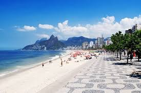

|  |
O nome da cidade veio de navegadores portugueses que, em 1º de janeiro de 1502, confundiram a baía com a foz de um rio. Depois, passou a se chamar Cidade de São Sebastião do Rio de Janeiro. Foi capital do Brasil de 1822 até 1960 e, depois, tornou-se centro econômico e cultural Encyclopedia Britannica A região tem cerca de 6,6 milhões de habitantes, enquanto a Grande Rio chega a quase 12,8 milhões de pessoas Encyclopedia Britannica O Rio de Janeiro é uma das cidades mais icônicas e reconhecidas do mundo, famosa por sua beleza natural exuberante, cultura vibrante e história rica. Fundada em 1565, essa metrópole brasileira combina uma paisagem urbana impressionante com praias paradisíacas, montanhas imponentes e uma floresta tropical que se integra ao seu centro urbano, criando um cenário único que encanta moradores e visitantes. Localizado na costa sudeste do Brasil, o Rio é a capital do estado que leva o mesmo nome e possui aproximadamente 6,6 milhões de habitantes na cidade propriamente dita, que fazem parte de uma região metropolitana que ultrapassa 12 milhões. Essa densidade populacional convive harmoniosamente com áreas de preservação ambiental, como a Floresta da Tijuca, considerada a maior floresta urbana do mundo, que oferece trilhas, cachoeiras e uma biodiversidade surpreendente no meio da cidade. O Rio de Janeiro é conhecido mundialmente por seus cartões-postais, que atraem turistas o ano todo. Entre eles, destaca-se o Cristo Redentor, uma das Novas Sete Maravilhas do Mundo, que vigia a cidade do alto do morro do Corcovado com seus braços abertos, símbolo de acolhimento e fé para muitos brasileiros. O Pão de Açúcar, outra atração emblemática, oferece vistas panorâmicas espetaculares através de seus teleféricos que sobem suas formações rochosas que se erguem à beira da Baía de Guanabara.
As praias de Copacabana e Ipanema são mundialmente famosas, locais onde a cultura carioca se manifesta em suas formas mais autênticas — desde o lazer descontraído e o esporte até a música e a gastronomia. O estilo de vida praiano, com seus quiosques, esportes de areia e pôr do sol inesquecível, é uma marca registrada da cidade. Culturalmente, o Rio é um caldeirão de influências que refletem a diversidade do Brasil. A música, o samba e a bossa nova nasceram e se desenvolveram em seus bairros, acompanhando a história do país e transformando a cidade em um polo artístico vibrante. O Carnaval do Rio é a maior festa popular do planeta, reconhecida por seus desfiles de escolas de samba, blocos de rua, fantasias coloridas e uma energia contagiante que transforma a cidade durante dias de festa. O patrimônio arquitetônico do Rio inclui desde construções coloniais até edifícios modernos, passando por teatros, museus e espaços culturais que evidenciam sua importância histórica e contemporânea. O Theatro Municipal, o Museu de Arte Moderna (MAM) e o Museu do Amanhã são apenas alguns exemplos das instituições que fomentam a arte e a ciência na cidade. A gastronomia carioca é tão rica quanto sua cultura, mesclando ingredientes indígenas, africanos e portugueses. Pratos tradicionais como a feijoada, acompanhada de farofa, couve e laranja, são celebrados em todo o Brasil. Além disso, a cidade oferece uma culinária diversificada, com mercados, bares e restaurantes que servem desde comida típica até alta gastronomia internacional. Economicamente, o Rio de Janeiro é um dos principais centros financeiros do Brasil, com forte presença nos setores de petróleo, mineração, turismo, comércio e serviços. A cidade enfrenta desafios como desigualdade social e segurança pública, mas esforços contínuos buscam melhorar a qualidade de vida e a infraestrutura urbana. Em suma, o Rio de Janeiro é uma cidade de contrastes e belezas, onde o urbano se mistura à natureza, a tradição encontra a modernidade, e o cotidiano pulsa ao ritmo alegre e acolhedor do povo carioca. Conhecida como “Cidade Maravilhosa”, o Rio é um destino que encanta, inspira e emociona quem tem o privilégio de conhecê-la.
A paisagem urbana do Rio é um Patrimônio da Humanidade, pela UNESCO Em 2025, foi nomeada Capital Mundial do Livro A Floresta da Tijuca é a maior floresta urbana do mundo, com trilhas, cachoeiras e uma biodiversidade incrível
O Carnaval do Rio é a festa mais famosa do mundo, com mais de 2 milhões de foliões por dia nas ruas — entre blocos e desfiles das escolas de samba Paula Pins The Planet A cultura carioca é uma fusc de influências indígenas, portuguesas, africanas e de imigrantes — evidente no samba, bossa nova, gastronomia e vida de rua
A culinária carioca mistura tradições indígenas, africanas e portuguesas. Pratos icônicos: feijoada, moqueca, rodízio de carnes, além de snacks como pão de queijo, coxinhas, pastéis e bebidas como mate e bebida com cachaça
Rio é um dos estados com segunda maior economia do Brasil, com forte atuação em petróleo, mineração, telecomunicações e turismo Recebe milhões de turistas todo ano, com ocupação média de hotéis acima de 60% A segurança vem sendo melhorada em áreas turísticas, mas ainda exige cuidados — evite ostentar, prefira zonas turísticas como Copacabana, Ipanema e Centro
Voltar para São Paulo